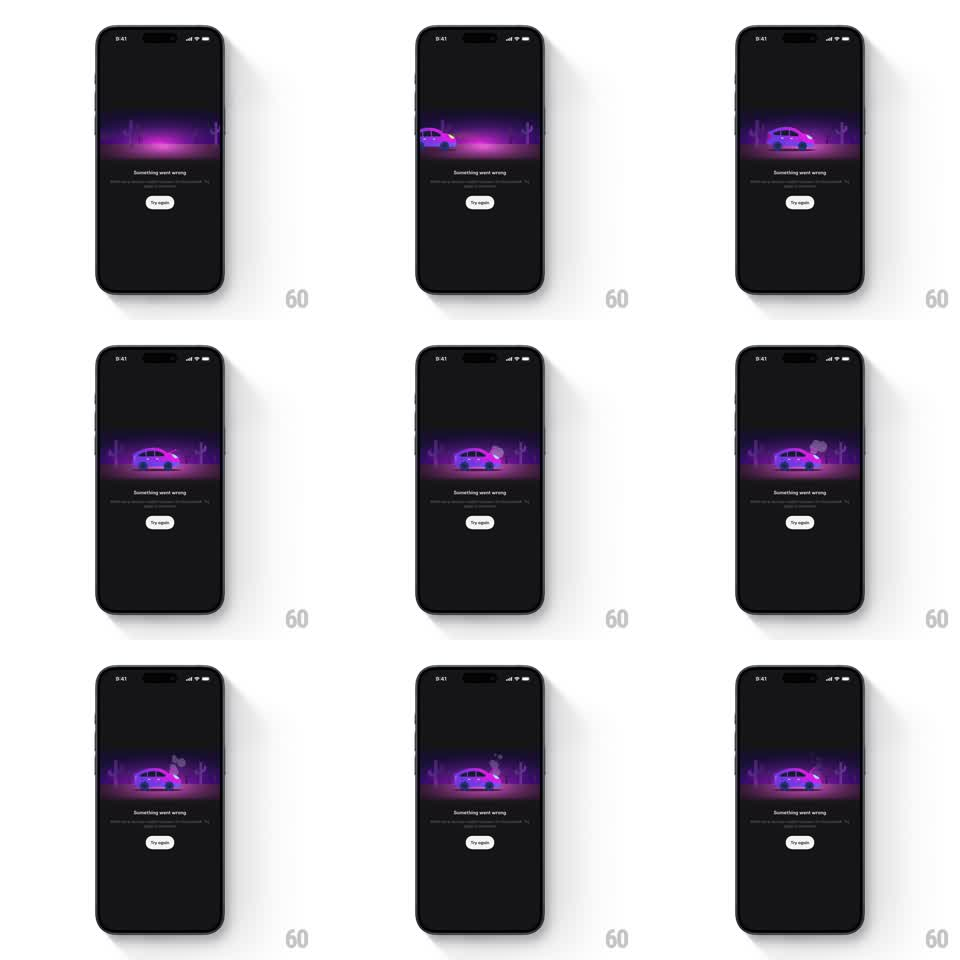

Media
Frame-by-frame

Rebuild this animation 1:1: District's error screen - a neon-purple desert vignette where a car rolls in, stalls, and puffs smoke from its hood on loop while "Something went wrong" waits below.

Rebuild this animation 1:1: District's error screen - a neon-purple desert vignette where a car rolls in, stalls, and puffs smoke from its hood on loop while "Something went wrong" waits below. ## Integration Integration: stack-agnostic spec - springs given as stiffness/damping, timed motions as duration + curve; map every value to your framework and animation library of choice. ## Scene Near-black screen: a wide rounded illustration band - purple neon night desert, cacti silhouettes, magenta horizon glow; under it "Something went wrong" with a one-line subcopy and a white "Try again" pill. ## Motion spec Pattern: looping breakdown vignette - arrival, stall, smoke. - The vignette fades up (400ms) with the horizon glow breathing slowly (opacity 0.7 -> 1, 2.5s). - The car drives in from the left (translateX -40% -> 0 over 900ms, ease-out) with a soft headlight cone, decelerates, and rocks to a stop (rotateZ 1.5 -> 0 degrees settle, spring ~200/12). - After a 300ms beat, smoke puffs from the hood: 2-3 grey-purple blobs rise (translateY 0 -> -30px, scale 0.4 -> 1.2, fade out, 1.2s each, staggered 400ms), looping every ~2.5s. - The car idles with a faint suspension bob (translateY +/-1.5px, 1.8s) between smoke bursts. ## Calibration - The scene is neon-noir: saturated purple on near-black, the car lit by the horizon, not white light. - The loop tells one joke - car breaks down in the desert - and repeats it patiently; no new events after the first cycle. ## Reduced motion Static vignette with the car already stalled; a single smoke puff fades in and holds. ## Don't miss - Smoke originates at the hood's front edge and drifts up-right with the implied wind. - "Try again" is static and always tappable - the animation never gates recovery.